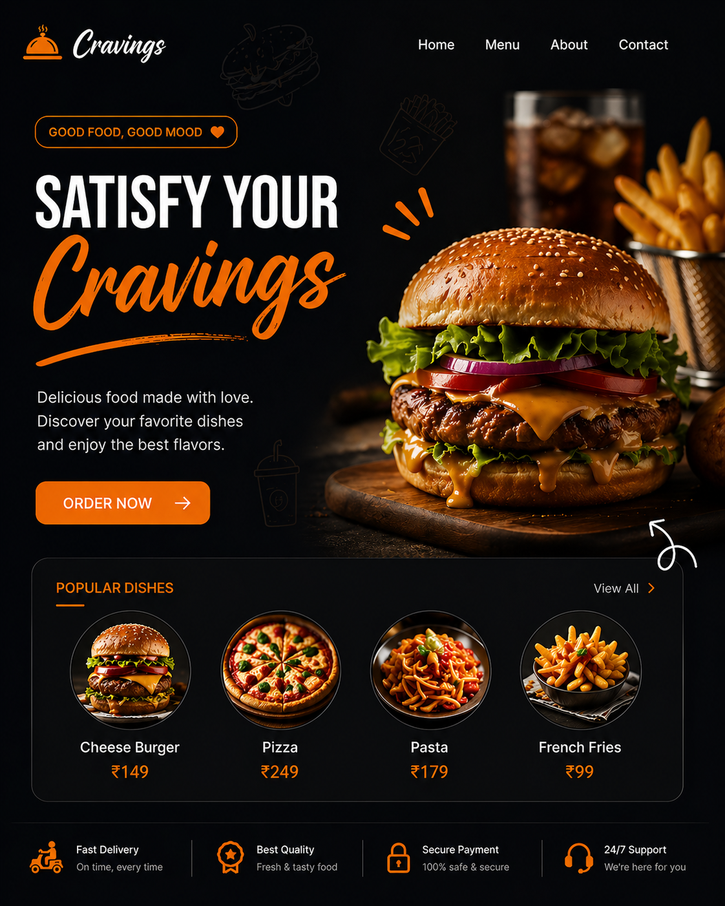
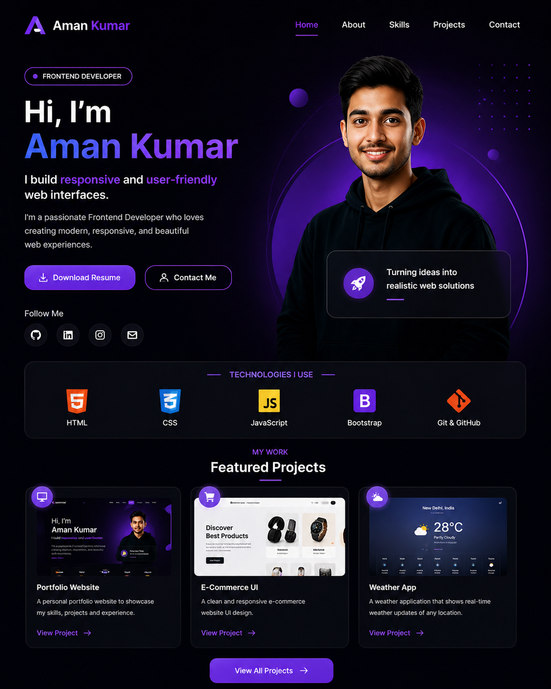
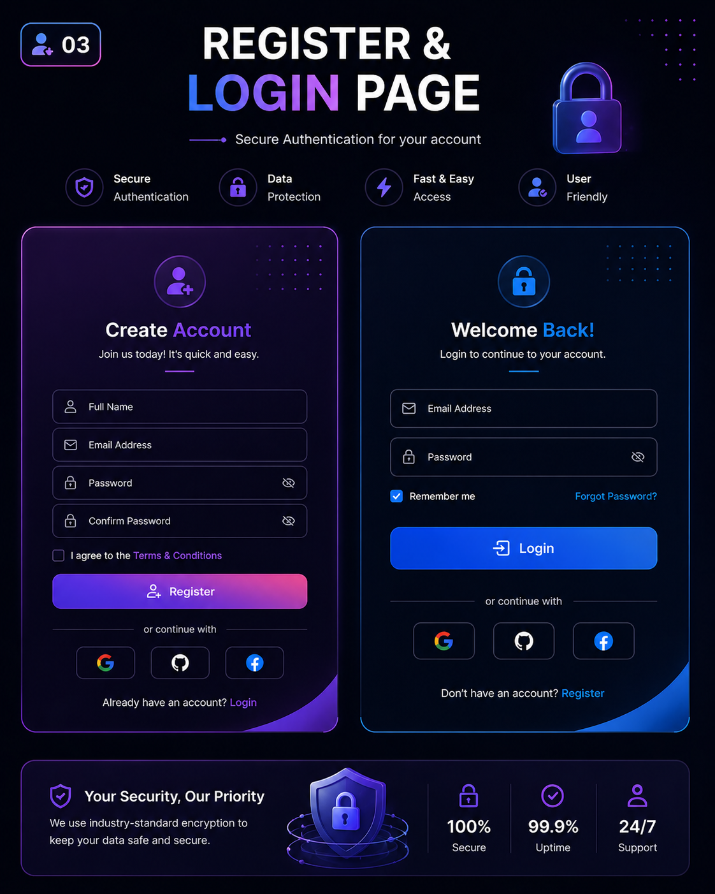
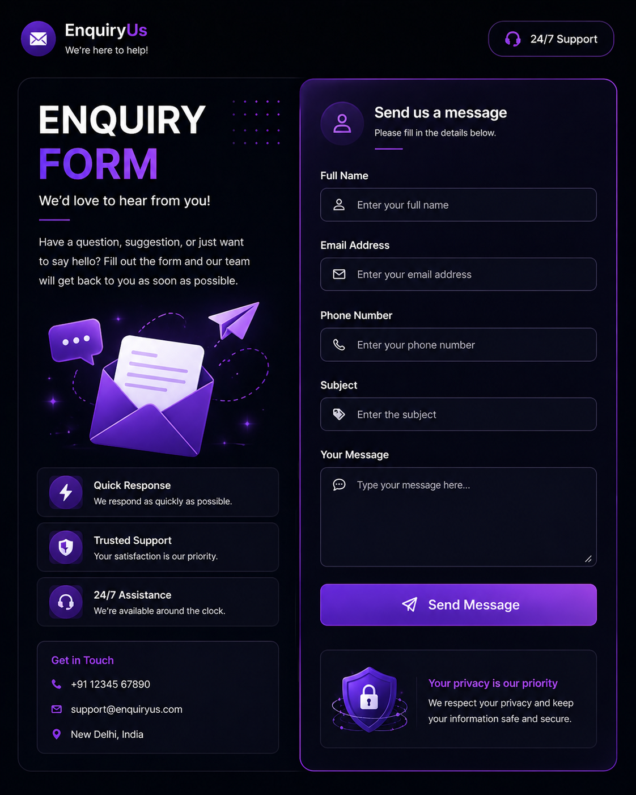
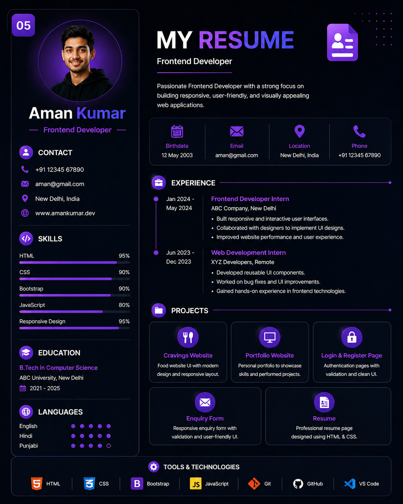

The following projects showcase my frontend development skills in
creating
responsive, modern, and user-friendly web interfaces.

Developed a modern and responsive food website interface named Cravings, designed to showcase food items with an attractive layout and smooth user experience. The project focuses on clean UI design, responsive navigation, and visually appealing components such as featured dishes, menu sections, and call-to-action buttons.
This project demonstrates my ability to create engaging layouts using HTML, CSS and Bootstrap, ensuring compatibility across different screen sizes and devices.

Designed and developed a responsive personal portfolio website, to showcase my skills, projects, and contact details. The website features structured sections such as Home, About, Projects, Skills, and Contact, providing a clean and professional user interface.
Special focus was given to responsive design, typography, and layout consistency to ensure smooth viewing across mobile, tablet, and desktop devices.

Created a secure and user-friendly Register and Login interface, dwith well-structured form layouts and input validation features. The design emphasizes usability, accessibility, and responsive form elements to improve user interaction.
This project highlights my skills in building form-based interfaces and managing UI components efficiently using modern frontend technologies.

Developed a responsive Enquiry Form,that allows users to submit queries efficiently through a clean and structured interface. The form includes essential fields such as name, email, subject, and message, ensuring a user-friendly experience.
The project focuses on form design, layout alignment, and responsiveness to enhance usability across different devices.

Designed a professional Resume Web Page, to present personal details, skills, education, and project experience in a visually structured format. The layout ensures readability, clarity, and responsive behavior across various screen sizes.
This project demonstrates my ability to organize information effectively and create structured UI layouts suitable for professional presentation.